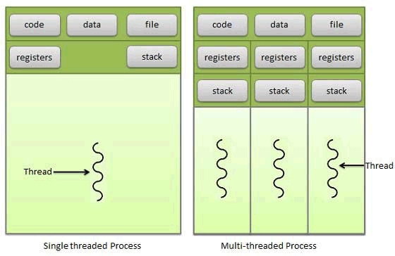
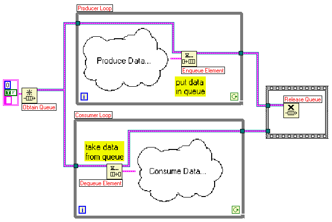

| Threading / Security & Hacking | Eindopdracht |
Threading / Security & Hacking - Eindopdracht 2013
De eindopdracht voor de vakken Threading en Security & Hacking is een miniproject waarvoor jullie in de tweede helft van dit blok aan gaan werken. Deze opdracht moet in teams van twee worden uitgevoerd. Aan het eind van het blok (week 8 of 9) zullen er assessments zijn, waarin jullie het gebouwde product gaan presenteren en uitleggen. De docenten zullen dan ter beoordeling vragen stellen, en de code bekijken en testen. Er wordt ook een testrapport van jullie verwacht (zie eisen verderop).
Lees deze opdracht helemaal en zorgvuldig. Als je denkt dat je klaar bent, check de opdracht dan nog een keer.
Onderwerpen
De onderwerpen die in deze opdracht aan bod komen:
- Threading
- Gebruik van sockets
- Lezen van bestanden en mappen
- Gebruik van gedeeld geheugen
- Het producer-consumer-probleem
- Het HTTP-protocol
- En bij dit alles: Security & Hacking (OWASP)
Opdracht: Bouw een webserver in Java, C# of C++
- Een webserver
- Een controlserver
- Een logger
Webserver
- Lees alle regels uit het request
- Stuur altijd een correcte response-header, met onder andere:
- De juiste melding (200, 403, 404, ...)
- Het correcte content-type
- De content-length
Bovendien:
- De pagina's met foutmeldingen (zoals 404) staan in een aparte map.
- De webserver moet alle verzoeken loggen, met daarin:
- Het ip-adres van de aanvrager
- De datum en tijd (yyyy-mm-dd HH:MM:SS) en tijdsduur (in msec) van het verzoek
- De hele URL uit het request
Controlserver
De controlserver draait op dezelfde machine, maar op een andere poort dan de webserver. De controlserver is een bijzonder soort webserver om de instellingen van je programma te kunnen wijzigen.
- De control-server werkt met een web-interface (formulier).
- In de control-server kun je de volgende instellingen zien en wijzigen:
- listen-poorten van beide servers (meteen wijzigen als na OK)
- de webroot van de webserver
- de naam van de default-pagina (zoals index.html)
- directory browsing in- en uitschakelen
- De instellingen worden in een XML-bestand opgeslagen.
- Het logbestand moet via een webinterface in de controlserver te bekijken zijn.
Beveiliging
Inloggen
Om in de controlserver te komen, moeten beheerders en helpdesk-medewerkers kunnen inloggen. Je moet daarvoor een authorisatiesysteem bouwen met de volgende eisen:
- Het systeem werkt met POST over HTTPS
- Er zijn twee security levels:
- ondersteuners mogen instellingen zien en log files bekijken
- beheerders mogen instellingen wijzigen, log files bekijken en gebruikersgegevens onderhouden
- Gebruikersgegevens staan in een SQL-database (zoals MySQL)
- Wachtwoorden worden gecodeerd opgeslagen
Overige beveiligingseisen

- Gebruikers mogen gegevens buiten de webroot niet kunnen benaderen
- De bedreigingen zoals genoemd in de OWASP Top 10 (2013) worden ondervangen
Testen
Bedenk testscenario's om alle risico's te testen. Beschrijf voor elke bedreiging uit die OWASP Top 10
- wat het gevaar zou kunnen zijn in je server
- wat je daartegen gedaan hebt
- hoe je dat getest hebt
Maak hiervan een keurig rapport en breng dat mee naar de eindbeoordeling.
Logger
Niet omdat het de beste oplossing is, maar om ervaring met synchronisatie op te doen, loggen we via een zelfgemaakte cyclische message-queue (fifo). Deze moet je implementeren als een string-array met vaste lengte.
 Hier ga je dus een producer-consumer probleem oplossen. Er is één consument: de logger-thread. Er zijn meerdere producenten: de web- en controlserver en hun handler-threads. Een thread kan een boodschap in de queue zetten via een methode van de logger. Deze methode moet de aanroeper laten wachten als de queue vol is of als er een andere thread met de queue bezig is.
De logger-thread wordt aan het begin gestart en blijft aanwezig (wordt dus niet voor elke boodschap gestart). Hij wacht tot er iets te loggen valt. De logger mag alleen maar boodschappen uit de queue halen en in het logbestand schrijven als er minstens één boodschap in staat en als de queue niet door een andere thread in gebruik is.
Met andere woorden: de wachtrij is een stuk gedeeld geheugen voor alle threads, dat door synchronisatie beschermd moet worden.
Programmeren
- De hele applicatie kan een console-appplicatie zijn (of een server/deamon).
- De GUI van de controlserver gaat via een browser. Gebruik daarvor html-forms.
- Schrijf zelf code om over sockets te communiceren, dus geen HTTPListener of andere kant-en-klare oplossingen.
- Gebruik duidelijke code, voorzien van zinvol commentaar
- Maak een logische indeling in klassen
- Gebruik geen harde bestandspaden in je code, zoals "C:/Webroot"
- Gebruik geen harde getallen in je code, maar constanten
- Gebruik nergens polling (busy waiting), ook niet met Sleep() in een loop
- Breek threads niet af met close, kill, interrupt of varianten om threads te stoppen
- Wees zuinig met geheugen: lees bestanden niet in één keer in het geheugen, maar in stukken
// onzin-commentaar: i++; // verhoog de waarde van de variabele i met één
Algemeen
- Werk in een team van twee
- Zorg dat elk van beide teamleden alle code kent en kan uitleggen
- Test je server in verschillende browsers
Beoordeling
Als je aan alle eisen voldoet, kun je in principe een 8.0 scoren. Met heel mooie oplossingen en extra functionaliteit kun je hoger scoren. Jullie worden nog uitgenodigd om in week 8 of 9 je server te demonstreren en uit te leggen.
Succes!
SPIJ20130528
| Avans Hogeschool 's‑Hertogenbosch | Academie voor Industrie & Informatica | Opleiding BICT |